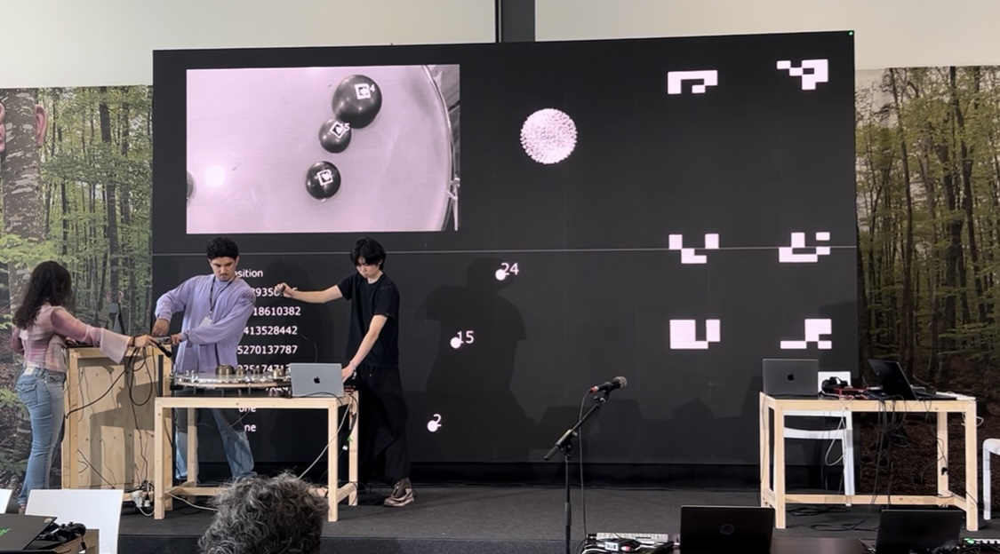

Audio Visual Performance at
Sónar+D 2025 AI Performance Playground, an AI & Music Hacklab powered by S+T+ARTS.

| 『Propagation』 Audio Visual Performance at Sónar+D 2025 AI Performance Playground, AI & Music Hacklab powered by S+T+ARTS With Neutone morpho, we shaped raw noise into musical form, then let it dissolve back into neural noise. Huge thanks to the Sónar+D team, organizers and everyone involved. Special thanks to Neutone Inc. for the tools and support. It was an incredibly valuable opportunity. Performers (Mucha Gente) Dan Xu Noni-Mouse Teresa Pelinski @allienski Keigo Yoshida Tim Auzinger Matthias Schäfer |

| 『Mineral Neurons』 Audio Visual Performance at Sónar+D 2025 AI Performance Playground, AI & Music Hacklab powered by S+T+ARTS This piece combined the amazing vibration system Rubén brought with Veronica’s gen_synth_fx built on the nn~ module, and visualized how machine learning transformed the sounds of those physical vibration systems in real time. Thank you, Rubén and Veronica, for the invaluable opportunity. It was incredibly inspiring. Huge thanks to the Sónar+D team, organizers and everyone involved. Special thanks to Neutone Inc. for the tools and support. It was an incredibly valuable opportunity. Performers (Mineral Neurons) Veronica Gesteira Rubén Bañuelos Keigo Yoshida |